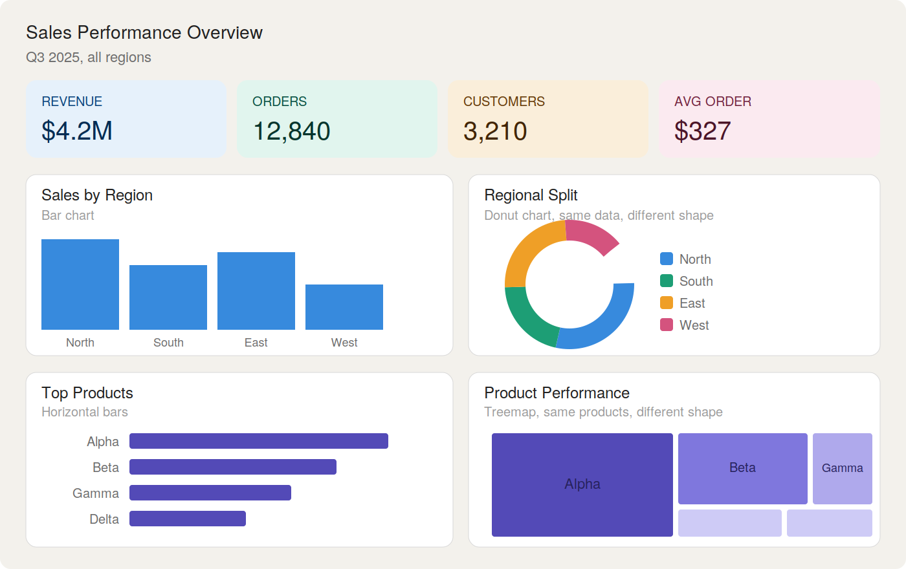
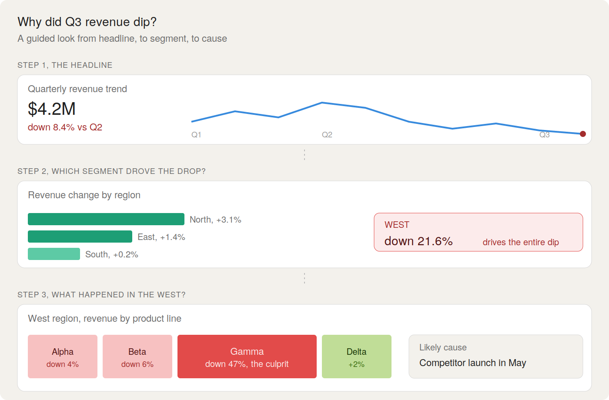

When I started learning Power BI, I was genuinely amazed by how beautiful a bunch of charts could look sitting together on a single canvas. Customized logos for KPIs, matching colour palettes, polished themes, and my personal favourite, navigation buttons, all felt like magic. I would spend hours experimenting with design features, and the moment I landed on a layout that looked visually stunning, I would lean back and think, "job done."
I am only recently realising it was not.
· · ·
Somewhere in that process, I had quietly forgotten what Power BI actually is. It is a data visualisation and storytelling platform, not a design software for charts. Visual aesthetics is one small piece of a much bigger picture: helping people make evidence-based decisions. And that is a lesson I am still learning to apply every time I open a new report.
How I Think We Got Here
I noticed it first by scrolling LinkedIn. Dashboard makeover trends, design templates being sold as digital products, side-by-side "before and after" posts where the "after" is just the same data with a darker theme and rounded corners. There is an entire little economy built around making Power BI reports look impressive in a screenshot, and I will be honest, I was absorbing all of it without questioning it.
I get the appeal. A polished dashboard photographs well. It gets likes. It signals craft. And when you are learning, those signals feel like proof you are getting good at this. But the more I sit with it, the more I wonder if the audience for our dashboards has slowly shifted, from the decision-makers who actually use them, to the strangers who scroll past them.
What I Am Starting to Notice
When I go back and look at some of my own dashboards now, and a lot of the ones I see shared online, I keep running into the same thing: when you actually try to extract a story from them, the dots do not quite connect.
I will often spot two different charts giving the same insight, just dressed differently. A bar chart showing sales by region, and right next to it, a donut chart showing the same regional split. It looks rich at first glance, but it is really just redundancy in nicer clothes.
I also notice that the next chart rarely takes you one step deeper than the one before it. A good dashboard should drill down. You start with the headline, then peel back a layer to ask why, then another to ask where exactly. What I keep building, and seeing, instead is a collection of charts that each say something interesting on their own, but never build on each other. The visuals are there. The thin line of connection that turns them into a sequential story is what is missing.
The result is a dashboard that looks like it should tell you something profound but leaves you with the same surface-level understanding you walked in with.
A Quick Comparison
Dashboard A: pretty, but the dots do not connect.
Four colourful KPI cards. A bar chart of sales by region, sitting next to a donut chart of, well, sales by
region. Then a horizontal bar of top products, next to a treemap of the same products. Every individual chart
looks clean. But ask it a question — why is revenue down — and it has no answer. The charts decorate the data.
They do not interrogate it.

Dashboard B: plainer, but it actually tells a story.
Same kind of data. But this one starts with a headline, "revenue dipped 8.4%", then asks the next obvious
question and answers it, "the West region drove almost all of it", then drills one level deeper, "the Gamma
product line collapsed, likely from a competitor launch." Three visuals, three layers, one continuous thought.

Dashboard A is the kind I would have proudly screenshotted a few months ago. Dashboard B is the one I am trying to build now, the one a manager could actually open on a Monday morning and figure out what to do next. The takeaway I am sitting with is that B does not have to be ugly. It just should not prioritise prettiness over progression.
The Shift I Am Trying to Make
I am starting to think of a Power BI dashboard as a storytelling platform, and like any good story, it should let the reader drill down into the details that matter. Aesthetics is the typography of that story. They make it readable, comfortable, even pleasant. But typography is not the story. Plot is.
I am learning that the dashboards worth building are not the ones that make someone say, "wow, that is beautiful." They are the ones that make someone say, "oh, so that is why."
Closing Thought
So the next time I finish a dashboard, and it looks gorgeous, I am going to try asking myself one more question before calling it done: if I stripped away the colours, the icons, and the theme, would the story still hold together?
Because if the answer is no, I did not build a dashboard. I built a poster. And I am slowly learning the difference.
· · ·